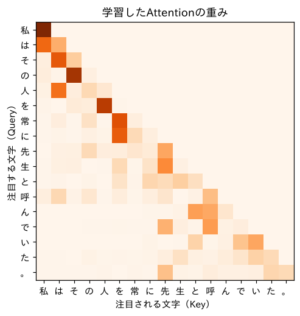

第3部 Transformerを組み立てる · 第11章
注目する仕組み：Self-Attention
どの文字に注目するかを、文字どうしが話し合って決める
おすすめは「ページを読みながら、コードを自分のノートブックに1セルずつ貼って実行」。完成ノートは困ったときの答え合わせ用です。
つくるもの
GPTの心臓部 Self-Attention を一行ずつ自作し、それだけで動く小さな言語モデルを学習させる
ついでに身につく理論
- 全位置で同時に「次」を予測する学習
- 過去の平均を行列の掛け算で一気に計算
- マスク付きsoftmax（未来を見ない）
- 内積＝似ている度
- Query・Key・Value
- で割る理由（分散の話）
- 位置埋め込み（Attentionは順番を知らない）
新しく使うPython
torch.trilとmasked_filltransposeで行列の向きを変えるregister_buffer- ブロードキャストつきの
@

ミナト
「注目する」って、人間みたいなことをするんですね。

ボンゴ先生
「先生は奥さんの顔を見て、彼女に……」の「彼女」が誰か分かるのは、キミが「奥さん」に注目したからだ。直前の「て、」を見ても分からない。どこを見るべきかは、文の内容しだいで変わる。それを、文字たちが自分たちで話し合って決める。それがAttentionだ。話し合いの方法は、意外なほど単純だよ。
準備と、新しい問題の出し方
import re, math, urllib.request
import torch
import torch.nn as nn
import torch.nn.functional as F
def load_soseki(file_id="773_ruby_5968"):
url = ("https://raw.githubusercontent.com/aozorahack/aozorabunko_text/master/"
f"cards/000148/files/{file_id}/{file_id}.txt")
text = urllib.request.urlopen(url).read().decode("cp932")
text = text.split("-------------------------------------------------------")[2]
text = text.split("底本：")[0]
text = re.sub(r"《.*?》", "", text)
text = re.sub(r"※?［＃.*?］", "", text)
text = text.replace("｜", "").replace("\r\n", "\n")
text = re.sub(r"\n{3,}", "\n\n", text)
return text.strip()
text = load_soseki()
chars = sorted(set(text))
V = len(chars)
stoi = {ch: i for i, ch in enumerate(chars)}
itos = {i: ch for ch, i in stoi.items()}
data = torch.tensor([stoi[c] for c in text])
n = int(len(data) * 0.9)
train_data, val_data = data[:n], data[n:]
def get_batch(data, batch_size, T, g):
ix = torch.randint(0, len(data) - T, (batch_size,), generator=g)
x = torch.stack([data[i:i + T] for i in ix])
y = torch.stack([data[i + 1:i + T + 1] for i in ix]) # 1文字ずらしたもの
return x, y
g = torch.Generator().manual_seed(0)
x, y = get_batch(train_data, 1, 8, g)
print("入力：", repr("".join(itos[i] for i in x[0].tolist())))
print("正解：", repr("".join(itos[i] for i in y[0].tolist())))入力： '私の注意を母より'
正解： 'の注意を母よりは'第9章までと違うところに気づきましたか？ 今回は 正解も8文字 です。入力の8文字それぞれについて、「その次の文字」を予測させます。
| 位置 | 見てよい文字 | 予測する文字 |
|---|---|---|
| 0 | 私 | の |
| 1 | 私の | 注 |
| 2 | 私の注 | 意 |
| … | … | … |
| 7 | 私の注意を母より | は |
1つの窓から8問作れるので、効率がいいのです。ただし大事なルールがあります。位置 t の予測には、位置 t までの文字しか使ってはいけない。位置2で「意」を予測するときに、位置3にある「意」そのものを見たら、それはカンニングです。
ステップ1：過去を「平均」してみる
各位置が過去の情報を集める、いちばん簡単な方法は「自分と、自分より前の全員の平均をとる」ことです。埋め込みの代わりに、でたらめなベクトルで試してみます。
torch.manual_seed(0)
B, T, C = 4, 8, 2 # 4個の文章、8文字、各文字は2個の数
x = torch.randn(B, T, C)
xbow = torch.zeros(B, T, C) # bow：bag of words（言葉の袋）
for b in range(B):
for t in range(T):
xbow[b, t] = x[b, :t + 1].mean(dim=0) # 位置0〜tの平均
print(x[0])
print(xbow[0])tensor([[-1.1258, -1.1524],
[-0.2506, -0.4339],
[ 0.8487, 0.6920],
[-0.3160, -2.1152],
[ 0.3223, -1.2633],
[ 0.3500, 0.3081],
[ 0.1198, 1.2377],
[ 1.1168, -0.2473]])
tensor([[-1.1258, -1.1524],
[-0.6882, -0.7931],
[-0.1759, -0.2981],
[-0.2109, -0.7524],
[-0.1043, -0.8546],
[-0.0286, -0.6608],
[-0.0074, -0.3896],
[ 0.1331, -0.3718]])xbow の位置1は、x の位置0と1の平均（）になっています。未来の文字は使っていません。
ステップ2：行列の掛け算で一気に
for文が二重になっていて遅そうです。第6章の教えを思い出しましょう。「for文を書いたら負け」。実は、この平均は行列の掛け算1回で計算できます。
wei = torch.tril(torch.ones(T, T)) # 下三角行列（左下だけ1）
wei = wei / wei.sum(dim=1, keepdim=True) # 各行の合計が1になるように
print(wei)
xbow2 = wei @ x # [T, T] @ [B, T, C] → [B, T, C]
print(torch.allclose(xbow, xbow2))tensor([[1.0000, 0.0000, 0.0000, 0.0000, 0.0000, 0.0000, 0.0000, 0.0000],
[0.5000, 0.5000, 0.0000, 0.0000, 0.0000, 0.0000, 0.0000, 0.0000],
[0.3333, 0.3333, 0.3333, 0.0000, 0.0000, 0.0000, 0.0000, 0.0000],
[0.2500, 0.2500, 0.2500, 0.2500, 0.0000, 0.0000, 0.0000, 0.0000],
[0.2000, 0.2000, 0.2000, 0.2000, 0.2000, 0.0000, 0.0000, 0.0000],
[0.1667, 0.1667, 0.1667, 0.1667, 0.1667, 0.1667, 0.0000, 0.0000],
[0.1429, 0.1429, 0.1429, 0.1429, 0.1429, 0.1429, 0.1429, 0.0000],
[0.1250, 0.1250, 0.1250, 0.1250, 0.1250, 0.1250, 0.1250, 0.1250]])
Trueステップ3：softmaxで重みを作る
重みを自由に決められる形に書き直します。第3章のsoftmaxを使います。
tril = torch.tril(torch.ones(T, T))
scores = torch.zeros(T, T) # 今はまだ全部0点
scores = scores.masked_fill(tril == 0, float("-inf")) # 未来の位置は -∞ 点
wei = F.softmax(scores, dim=-1)
print(wei[:3])
print(torch.allclose(wei @ x, xbow))tensor([[1.0000, 0.0000, 0.0000, 0.0000, 0.0000, 0.0000, 0.0000, 0.0000],
[0.5000, 0.5000, 0.0000, 0.0000, 0.0000, 0.0000, 0.0000, 0.0000],
[0.3333, 0.3333, 0.3333, 0.0000, 0.0000, 0.0000, 0.0000, 0.0000]])
True内積：似ている度
ステップ4：Query・Key・Value
いよいよSelf-Attentionの本体です。各位置（各文字）は、自分のベクトルから3種類のベクトルを作ります。
torch.manual_seed(0)
B, T, C = 4, 8, 32
x = torch.randn(B, T, C)
head_size = 16
key = nn.Linear(C, head_size, bias=False)
query = nn.Linear(C, head_size, bias=False)
value = nn.Linear(C, head_size, bias=False)
k = key(x) # [B, T, 16]
q = query(x) # [B, T, 16]
scores = q @ k.transpose(-2, -1) # [B, T, 16] @ [B, 16, T] → [B, T, T]
scores = scores.masked_fill(tril == 0, float("-inf"))
wei = F.softmax(scores, dim=-1)
out = wei @ value(x) # [B, T, T] @ [B, T, 16] → [B, T, 16]
print(scores.shape, wei.shape, out.shape)
print(wei[0].detach().round(decimals=2))torch.Size([4, 8, 8]) torch.Size([4, 8, 8]) torch.Size([4, 8, 16])
tensor([[1.0000, 0.0000, 0.0000, 0.0000, 0.0000, 0.0000, 0.0000, 0.0000],
[0.8800, 0.1200, 0.0000, 0.0000, 0.0000, 0.0000, 0.0000, 0.0000],
[0.0600, 0.3700, 0.5800, 0.0000, 0.0000, 0.0000, 0.0000, 0.0000],
[0.1700, 0.4500, 0.0400, 0.3400, 0.0000, 0.0000, 0.0000, 0.0000],
[0.2800, 0.1800, 0.0500, 0.3100, 0.1800, 0.0000, 0.0000, 0.0000],
[0.4700, 0.1400, 0.2700, 0.0300, 0.0500, 0.0500, 0.0000, 0.0000],
[0.0500, 0.1800, 0.2500, 0.0100, 0.3800, 0.0800, 0.0500, 0.0000],
[0.0900, 0.2700, 0.0100, 0.2100, 0.0200, 0.0900, 0.2400, 0.0700]])重みが均等ではなくなりました。位置1は位置0に（0.88）、位置2は自分自身に（0.58）、位置5は位置0に（0.47）、と行ごとに注目する相手が違います。まだ学習していないので注目の仕方はでたらめですが、「内容に応じて重みが変わる」仕組みはこれで完成です。
なぜ √d で割るのか
実際のAttentionでは、点数を （ はhead_size）で割ります。これを忘れるとどうなるか、実験してみましょう。
torch.manual_seed(0)
for d in [16, 64, 256]:
q = torch.randn(1000, d)
k = torch.randn(1000, d)
dots = (q * k).sum(dim=1) # 1000組の内積
print(f"d={d:3d}：内積の分散 {dots.var():7.2f} √dで割ると {(dots / math.sqrt(d)).var():.2f}")d= 16：内積の分散 16.00 √dで割ると 1.00
d= 64：内積の分散 63.10 √dで割ると 0.99
d=256：内積の分散 259.85 √dで割ると 1.02部品にまとめる：Head クラス
ここまでを1つのクラスにまとめます。これが Attentionヘッド です。
class Head(nn.Module):
def __init__(self, n_embd, head_size, block_size):
super().__init__()
self.key = nn.Linear(n_embd, head_size, bias=False)
self.query = nn.Linear(n_embd, head_size, bias=False)
self.value = nn.Linear(n_embd, head_size, bias=False)
self.register_buffer("tril", torch.tril(torch.ones(block_size, block_size)))
def forward(self, x):
B, T, C = x.shape
k, q, v = self.key(x), self.query(x), self.value(x)
scores = q @ k.transpose(-2, -1) / math.sqrt(k.shape[-1])
scores = scores.masked_fill(self.tril[:T, :T] == 0, float("-inf"))
self.wei = F.softmax(scores, dim=-1) # 後で中身を見られるように取っておく
return self.wei @ v本当に未来を見ていないか、カンニング検査をしてみましょう。入力の最後の文字だけを書き換えて、それより前の位置の出力が変わらないことを確かめます。
torch.manual_seed(0)
head = Head(n_embd=32, head_size=16, block_size=8)
x1 = torch.randn(1, 8, 32)
x2 = x1.clone() # x1 は残したまま、別のコピーを作る（x2 = x1 だけだと同じものを指す）
x2[0, 7] = torch.randn(32) # 位置7（最後）だけ書き換える
out1, out2 = head(x1), head(x2)
print("位置0〜6の出力は同じ？", torch.allclose(out1[0, :7], out2[0, :7]))
print("位置7の出力は同じ？ ", torch.allclose(out1[0, 7], out2[0, 7]))位置0〜6の出力は同じ？ True
位置7の出力は同じ？ False未来（位置7）を変えても、過去（位置0〜6）の出力はまったく変わりません。カンニングしていない証拠です。
Attentionだけで言語モデルを作る
Headを1つだけ使って、言語モデルを作ってみましょう。
class OneHeadLM(nn.Module):
def __init__(self, V, block_size, n_embd=64):
super().__init__()
self.tok = nn.Embedding(V, n_embd) # 文字の埋め込み
self.pos = nn.Embedding(block_size, n_embd) # 位置の埋め込み（後で説明）
self.head = Head(n_embd, n_embd, block_size)
self.out = nn.Linear(n_embd, V)
def forward(self, idx, targets=None):
B, T = idx.shape
x = self.tok(idx) + self.pos(torch.arange(T))
x = x + self.head(x) # 過去の情報を「足し込む」
logits = self.out(x)
loss = None
if targets is not None:
loss = F.cross_entropy(logits.view(B * T, -1), targets.view(B * T))
return logits, loss
@torch.no_grad()
def val_loss(model, T):
model.eval()
xs = torch.stack([val_data[i:i + T] for i in range(0, len(val_data) - T - 1, T)])
ys = torch.stack([val_data[i + 1:i + T + 1] for i in range(0, len(val_data) - T - 1, T)])
loss = model(xs, ys)[1].item()
model.train()
return loss
block_size = 64
torch.manual_seed(0)
g = torch.Generator().manual_seed(0)
model = OneHeadLM(V, block_size)
opt = torch.optim.AdamW(model.parameters(), lr=3e-3)
print("パラメータの数：", sum(p.numel() for p in model.parameters()))
for step in range(2001):
x, y = get_batch(train_data, 32, block_size, g)
_, loss = model(x, y)
opt.zero_grad()
loss.backward()
opt.step()
if step % 500 == 0:
print(f"ステップ {step:4d}：訓練 {loss.item():.3f} 検証 {val_loss(model, block_size):.3f}")パラメータの数： 282253
ステップ 0：訓練 7.958 検証 7.851
ステップ 500：訓練 3.294 検証 3.542
ステップ 1000：訓練 3.170 検証 3.364
ステップ 1500：訓練 2.950 検証 3.316
ステップ 2000：訓練 2.774 検証 3.312パラメータ28万個、Headたった1つで、検証損失 3.31前後。第9章のMLP（66万個、3.395）より少ないパラメータで、良い成績です。しかもこのモデルは、64文字前まで見ることができます。窓を64に広げても、Attentionの部分のパラメータは1つも増えていません（位置の埋め込みが少し増えるだけ）。これがAttentionの強みです。
| モデル | 章 | パラメータ | 検証データの損失 |
|---|---|---|---|
| bigram（数える） | 5 | — | 3.581 |
| MLP（SGD） | 9 | 66万 | 3.395 |
| MLP（全部の治療） | 10 | 66万 | 3.177 |
| Attention 1ヘッド（2000ステップ） | 11 | 28万 | 3.31前後 |
1ヘッドでは、まだ第10章の治療済みMLPには届きません。でも、ここに部品（複数のヘッド、MLP、正規化、残差接続、層の積み重ね）を足していくと……それが次の章のTransformerです。
注目の様子をのぞく
学習したHeadが、実際にどこに注目しているかを見てみましょう。
!pip install -q matplotlib-fontjaimport matplotlib.pyplot as plt
import matplotlib_fontja
sample = "私はその人を常に先生と呼んでいた。"
idx = torch.tensor([[stoi[c] for c in sample]])
model.eval()
with torch.no_grad():
model(idx)
wei = model.head.wei[0]
plt.figure(figsize=(6, 5))
plt.imshow(wei, cmap="Oranges")
plt.xticks(range(len(sample)), list(sample))
plt.yticks(range(len(sample)), list(sample))
plt.xlabel("注目される文字（Key）")
plt.ylabel("注目する文字（Query）")
plt.title("学習したAttentionの重み")
plt.show()
各行が「その文字が、どの文字にどれだけ注目したか」です。右上が真っ白なのは、マスクで未来を見ていないからです。このヘッドは、自分自身よりも少し前の特定の文字に強く注目しています。たとえば「常」「に」は「を」に、「で」は「呼」や「先」に注目しています。人間には意味の分かりにくい注目の仕方ですが、モデルは損失を下げるのに役立つ見方を、自分で見つけ出したのです。それでも、1つのヘッドにできることは限られています。次の章では、ヘッドをたくさん用意して、それぞれに違う役割（直前を見る係、文の主語を探す係……）を分担させます。
クイズ 1：マスク
因果マスクがないと、学習中に何が起きる？
答えを見る（まず自分で考えてから！）
各位置が未来の文字（＝正解そのもの）を見られるので、カンニングして損失が非常に小さくなります。でも、実際に生成するときは未来の文字は存在しないので、まったく役に立たないモデルになってしまいます。
クイズ 2：QKV
Self-Attentionで、「どの文字にどれだけ注目するか」の重みは、何と何から計算される？
答えを見る（まず自分で考えてから！）
注目する側の Query と、注目される側の Key の内積から計算されます（ で割ってマスクをかけ、softmaxで重みにする）。そして、その重みで Value を平均したものが出力になります。
クイズ 3：√d
head_sizeが64のとき、 の点数を何で割る？ 割らないとどうなる？
答えを見る（まず自分で考えてから！）
で割ります。割らないと点数のばらつきが大きすぎて、softmaxが1つの位置だけに極端に集中し、学習が進みにくくなります。
できたらチェック
ボンゴ先生
キミは今、2017年に世界を変えた式を、自分の手で書いて動かした。次の章では、このHeadを何個も並べ、MLPと正規化と残差接続でサンドイッチにして、何層も積み上げる。それが Transformer。GPTの「T」だ。
押すと目次にチェックが付きます（この端末のブラウザにだけ保存）。